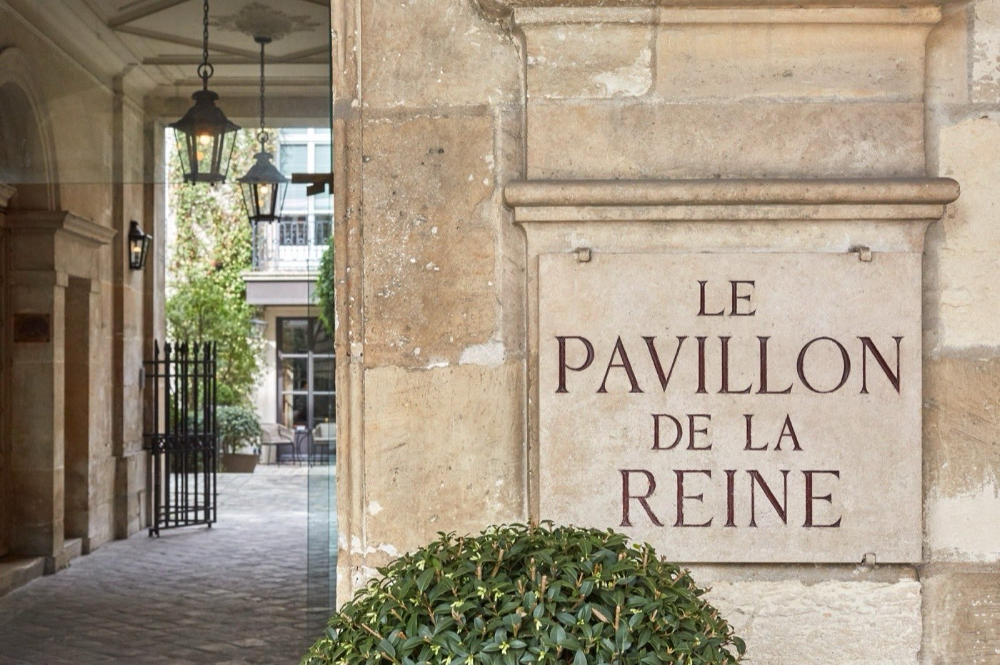
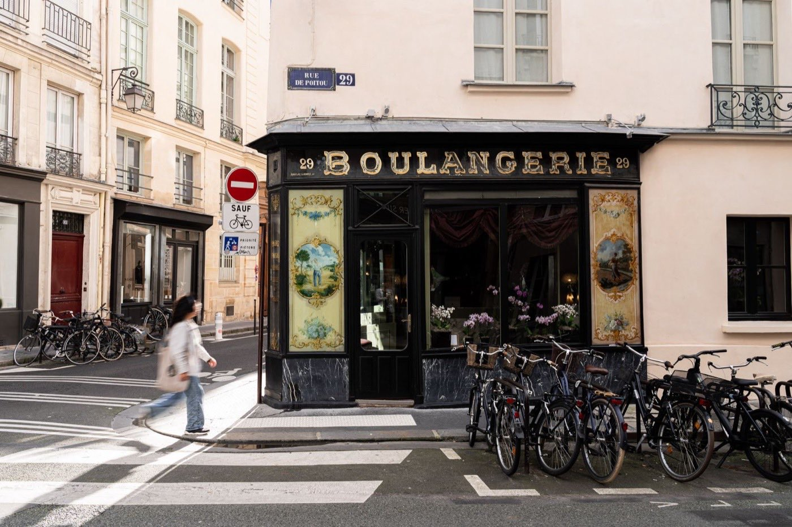
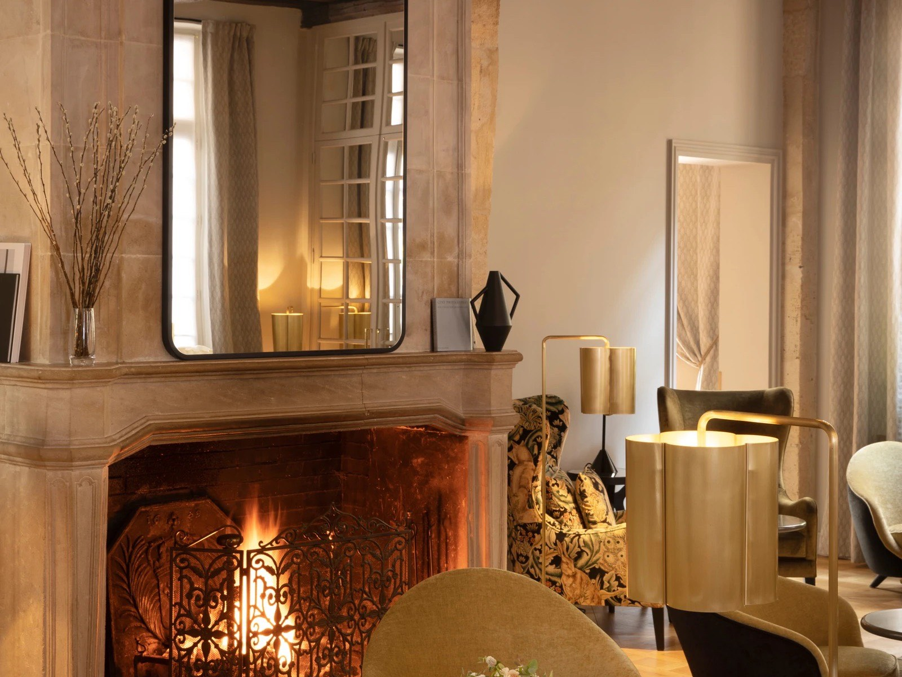
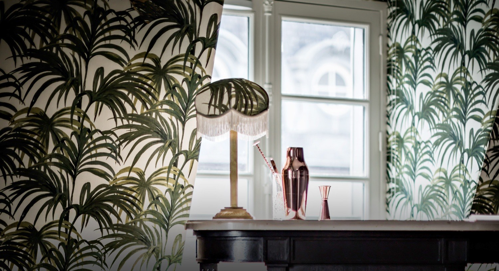

Les palaces à 2 000 € la nuit ne sont pas la seule option, et ils ne sont même pas
la meilleure. Dix adresses classées non pas sur leur qualité d'hôtel, mais sur un
critère que personne d'autre ne mesure : ce qu'elles font réellement pour un couple.
Huit d'entre elles sont sous 300 € la nuit en basse saison.
Par Lucas Lecoq, rédacteur en chef✺Publié le 21 juillet 2026✺17 min de lecture
L'Hôtel Récamier, place Saint-Sulpice : 24 chambres, une cour intérieure et
un tea-time offert chaque après-midi. Photo : site officiel.
TL;DR : l'essentielLe podium du romantisme parisien
Pavillon de la Reine (3e), indice romantisme 4,9/5 :
une cour pavée et fleurie cachée derrière la Place des Vosges, un spa, le calme absolu.
Le plus romantique de Paris, et l'une des deux adresses de la sélection au-dessus
des 300 €, avec l'Hôtel d'Aubusson.
Hôtel Récamier (6e), indice 4,8/5 :
24 chambres face à Saint-Sulpice, décor de Jean-Louis Deniot, tea-time offert
de 16 h à 18 h. Notre meilleur rapport romantisme-prix.
Hôtel du Petit Moulin (3e), indice 4,7/5 :
17 chambres signées Christian Lacroix dans l'ancienne boulangerie d'Henri IV,
champagne et fleurs fraîches à l'arrivée.
Le contre-pied : l'Hôtel Atmosphères ferme ce
classement avec 3,6/5 au romantisme, alors qu'il porte le meilleur score
hôtelier de la sélection (9,1/10 à notre
palmarès des 4 étoiles parisiens).
Un excellent hôtel n'est pas forcément un hôtel romantique, et c'est
précisément ce que ce classement sert à démêler.
L'indice romantisme LMHS, et pourquoi il ne suit pas le score hôtelier
Cette sélection croise deux notes qui ne mesurent pas la même chose. Le score LMHS sur 10 est celui de la grille Destination, déjà publiée dans nos palmarès de Paris, de Lyon et de Biarritz : il note la qualité hôtelière globale, tous publics confondus. Sept des dix adresses de cette page y figurent déjà, et nous reprenons leurs scores à l'identique : une même maison ne porte jamais deux notes différentes sur ce site.
L'indice romantisme LMHS, noté sur 5, est propre à cet article. Il évalue cinq marqueurs concrets, et rien d'autre :
Intimité : le nombre de chambres. Moins il y en a, mieux c'est.
Éléments de décor : poutres apparentes, cheminée, lit à baldaquin, baignoire îlot.
Services couple : champagne offert, petit-déjeuner en chambre, terrasse privée.
Calme : isolation phonique réelle, absence de bruit de rue.
Le classement de cette page suit l'indice romantisme, pas le score hôtelier. C'est ce qui fait remonter le Petit Moulin (8,5/10, mais 17 chambres et du champagne à l'arrivée) au-dessus des Grands Boulevards (8,6/10, mais 50 chambres et une ambiance de bar à cocktails). Les deux notes figurent dans le tableau, à vous d'arbitrer selon ce que vous cherchez.
Le tableau : indice romantisme, score et prix
Rang
Hôtel
Arr.
Chambres
Indice romantisme
Score LMHS
Basse saison
Haute saison
01
Pavillon de la Reine
3e
56
4,9/5
9,1/10
plus de 300 €*
550 à 850 €
02
Hôtel Récamier
6e
24
4,8/5
8,9/10
217 €
821 €
03
Hôtel du Petit Moulin
3e
17
4,7/5
8,5/10
285 €
582 €
04
Hôtel d'Aubusson
6e
49
4,5/5
8,5/10
420 €*
650 à 1 047 €
05
Hôtel Providence
10e
18
4,2/5
8,7/10
185 €
610 €
06
Hôtel de Nell
9e
33
4,1/5
8,3/10
220 €
647 €
07
Hôtel des Grands Boulevards
2e
50
3,9/5
8,6/10
255 €
589 €
08
Hôtel Verneuil
7e
26
3,9/5
7,9/10
143 €
312 €
09
Hôtel Henriette
13e
32
3,8/5
7,6/10
134 €
332 €
10
Hôtel Atmosphères
5e
56
3,6/5
9,1/10
132 €
416 €
Classement par indice romantisme. Prix chambre d'entrée de gamme par nuit,
taxes non incluses, basse saison de novembre à mars.
*Deux adresses dépassent le seuil de 300 € et sont assumées comme telles : le Pavillon de la
Reine, dont nous n'avons pas pu vérifier de tarif d'entrée en basse saison, et l'Hôtel
d'Aubusson, qui reste au-dessus toute l'année. Les huit autres sont bien sous 300 €.
Les scores LMHS de sept établissements sont repris de notre
palmarès des 4 étoiles de Paris.
Relevés en juillet 2026.
Notre sélection : les 10 hôtels les plus romantiques de Paris
01

Pavillon de la Reine, Place des Vosges indice 4,9/5
Pour qui : une demande en mariage, un anniversaire marquant, un séjour où le budget n'est pas le premier critère.
C'est l'adresse la plus romantique de Paris, et il n'y a pas vraiment de débat. Caché derrière la Place des Vosges, accessible par un passage discret que la plupart des passants ignorent, le Pavillon de la Reine est un havre absolu : une cour intérieure pavée et fleurie, un spa, des chambres calmes et spacieuses, 25 m² pour les Classiques. Le service est décrit par les voyageurs comme « aux petits soins ». Ce niveau de silence, à cet endroit de Paris, est une prouesse : la Place des Vosges est l'une des plus fréquentées de la capitale, et vous ne l'entendez pas.
Le bémol LMHS : les prix. En haute saison, la chambre standard monte de 550 à 850 €, très au-delà du seuil de cette sélection. Nous n'avons pas pu vérifier de tarif d'entrée en basse saison auprès d'une source fiable, donc nous n'en annonçons pas. Avec 56 chambres, c'est aussi le moins intime du trio de tête, et certaines chambres côté cour sont petites.
28 place des Vosges, 3e · 56 chambres · Spa · Cour intérieure pavée ·
Score LMHS 9,1/10 ·
Site officiel →
02
Hôtel Récamier, Saint-Sulpice indice 4,8/5
Pour qui : un premier week-end romantique à Paris, un anniversaire discret, une demande en mariage dans le calme.
Notre meilleur rapport romantisme-prix. L'Hôtel Récamier est posé face à l'église Saint-Sulpice, sur l'une des places les plus calmes de Saint-Germain-des-Prés. Derrière une façade discrète : 24 chambres seulement, réparties sur six niveaux avec un thème par étage, dans un décor éclectique signé Jean-Louis Deniot, et une cour intérieure avec terrasse-jardin accessible en été. Chaque chambre est différente, certaines donnent sur la cour, d'autres sur la place. Le tea-time est offert chaque jour de 16 h à 18 h, boissons chaudes et froides, biscuits et grignotages, dans le petit salon. C'est exactement le genre de détail qui fait la différence sur un week-end à deux. Le Jardin du Luxembourg est à cinq minutes à pied.
Le bémol LMHS : certaines chambres sont petites et peu lumineuses. En haute saison les prix s'envolent, jusqu'à 821 € la nuit. Et il n'y a ni spa ni services couple actifs : pas de champagne à l'arrivée, pas de package anniversaire. Le romantisme est dans l'atmosphère, pas dans les prestations.
3 bis place Saint-Sulpice, 6e · 24 chambres · Tea-time offert 16 h-18 h · Cour intérieure ·
Dès 217 €/nuit en basse saison · Score LMHS 8,9/10 ·
Site officiel →
03

Hôtel du Petit Moulin, Marais indice 4,7/5
Pour qui : une demande en mariage. C'est notre première recommandation pour cette occasion précise.
L'ancienne boulangerie d'Henri IV, dans le Haut Marais, est devenue l'un des hôtels les plus romantiques de Paris. Christian Lacroix a signé chacune des 17 chambres différemment : baroque, toile de Jouy, contemporain. Les poutres apparentes et les plafonds en pente des chambres sous les toits créent une atmosphère qu'aucun hôtel de chaîne ne sait produire. À l'arrivée : champagne et fleurs fraîches. Le petit-déjeuner peut être servi en chambre. Dix-sept chambres, c'est le plus petit établissement de cette sélection, et ça se sent dans le service.
Le bémol LMHS : les tarifs d'entrée démarrent à 285 € en basse saison, tout près du plafond de cette sélection, et grimpent à 582 € l'été. Pas de spa. Le Haut Marais est un quartier animé le soir : demandez explicitement une chambre sur cour si le calme compte pour vous.
29 rue de Poitou, 3e · 17 chambres · Champagne et fleurs à l'arrivée · Décor Christian Lacroix ·
Dès 285 €/nuit en basse saison · Score LMHS 8,5/10 ·
Site officiel →
04

Hôtel d'Aubusson, Saint-Germain indice 4,5/5
Pour qui : une occasion exceptionnelle, quand le budget peut dépasser les 300 €.
Nous l'incluons avec une réserve claire : ce 5 étoiles installé dans une demeure du XVIIe siècle, rue Dauphine, dépasse notre seuil en permanence. Mais le décor justifie la mention : poutres apparentes, cheminées, baignoires dans certaines chambres, atmosphère de grande maison de la Rive Gauche. C'est le plus beau décor ancien de cette sélection, et le seul à offrir une vraie sensation de demeure privée au cœur de Saint-Germain-des-Prés.
Le bémol LMHS : le prix, tout simplement. Les meilleures offres de basse saison profonde tournent autour de 420 € la nuit, et la haute saison va de 650 à 1 047 €. Avec 49 chambres, l'intimité est relative. À réserver pour une occasion, pas pour un week-end spontané.
33 rue Dauphine, 6e · 49 chambres · Demeure du XVIIe · Poutres et cheminées ·
Dès 420 €/nuit en basse saison profonde · Score LMHS 8,5/10 ·
Site officiel →
05

Hôtel Providence, République indice 4,2/5
Pour qui : un anniversaire de couple. C'est notre premier choix pour cette occasion.
Dix-huit chambres seulement, dans une rue calme du 10e. Le Providence est une référence du boutique-hôtel parisien, et sa signature est imbattable pour une soirée à deux : un mini-bar à cocktails intégré dans chaque chambre. Papier peint à palmiers, tapis Castaing, mobilier chiné, ambiance de romance urbaine parisienne. Les chambres Deluxe ont une baignoire sur pattes posée près du lit, et la suite en dernier étage dispose d'une terrasse privée avec vue sur Montmartre. Vous pouvez passer la soirée entière dans la chambre sans que ce soit un renoncement, ce qui est exactement le but.
Le bémol LMHS : le 10e arrondissement est géographiquement moins évocateur que Saint-Germain ou le Marais, même si le Canal Saint-Martin est à dix minutes. En haute saison, les prix peuvent plus que tripler pour atteindre 610 €. Pas de spa.
90 rue René Boulanger, 10e · 18 chambres · Mini-bar à cocktails en chambre · Baignoire sur pattes en Deluxe ·
Dès 185 €/nuit en basse saison · Score LMHS 8,7/10 ·
Site officiel →
06
Hôtel de Nell, Conservatoire indice 4,1/5
Pour qui : les couples qui préfèrent le design épuré aux fleurs et au champagne.
Jean-Michel Wilmotte a signé l'Hôtel de Nell : minimalisme élégant, tons doux, et surtout des salles de bain où la baignoire est taillée dans un bloc de marbre, dans l'esprit d'un rituel de bain japonais. L'hôtel occupe la rue du Conservatoire, une petite rue calme à l'ombre de l'église Sainte-Cécile dont les cloches sonnent doucement. Cinq minutes des Grands Boulevards, quinze du Louvre. C'est un romantisme sophistiqué et discret, pour qui trouve les lits à baldaquin un peu trop appuyés.
Le bémol LMHS : en haute saison, les prix montent jusqu'à 647 €. Le style minimaliste peut sembler froid à un couple qui cherche de la chaleur et du décor. Le petit-déjeuner est correct sans plus.
7 rue du Conservatoire, 9e · 33 chambres · Baignoire en marbre massif · Rue calme ·
Dès 220 €/nuit en basse saison · Score LMHS 8,3/10 ·
Site officiel →
07
Hôtel des Grands Boulevards, Sentier indice 3,9/5
Pour qui : les couples qui aiment le Paris contemporain, la gastronomie et les rooftops.
Le groupe Experimental a transformé un immeuble haussmannien du boulevard Poissonnière en l'une des adresses les plus désirables de la capitale. Design soigné, restaurant franco-italien réputé, et un rooftop caché avec bar à cocktails qui donne sur les toits de Paris. Clé Michelin 2024. C'est un très bon hôtel, et son score global le confirme.
Le bémol LMHS : l'ambiance est plus « cool parisien » que romantique. Cinquante chambres, un bar animé, un restaurant qui tourne : on n'y est jamais seuls au monde, ce qui explique un indice romantisme de seulement 3,9 malgré un score hôtelier de 8,6. Le boulevard Poissonnière est bruyant, exigez une chambre sur cour.
17 boulevard Poissonnière, 2e · 50 chambres · Rooftop et bar à cocktails · Restaurant ·
Dès 255 €/nuit en basse saison · Score LMHS 8,6/10 ·
Site officiel →
08
Hôtel Verneuil, Saint-Germain indice 3,9/5
Pour qui : les couples qui veulent l'adresse Saint-Germain authentique sans le prix des palaces.
Rue de Verneuil, dans le 7e, juste en face de la maison de Serge Gainsbourg. Le Verneuil est un hôtel familial de 26 chambres qui mêle poutres d'origine, clés lourdes et touches contemporaines. La chambre 104 est la plus demandée : un grenier romantique avec poutres apparentes et balcon à la française. Le petit-déjeuner est servi dans une cave voûtée joliment éclairée, et l'emplacement, entre musée d'Orsay et Louvre, est excellent pour marcher.
Le bémol LMHS : les chambres sont petites, y compris pour Paris. Aucun service couple. C'est l'avant-dernier score hôtelier de la sélection, juste devant l'Henriette : il manque à cette maison le supplément d'âme qui fait basculer un séjour.
8 rue de Verneuil, 7e · 26 chambres · Poutres d'origine · Petit-déjeuner en cave voûtée ·
Dès 143 €/nuit en basse saison · Score LMHS 7,9/10 ·
Site officiel →
09
Hôtel Henriette, Gobelins indice 3,8/5
Pour qui : un premier week-end romantique avec un budget serré.
Le meilleur rapport atmosphère-prix de la sélection. L'Henriette est conçu comme une maison de campagne en plein Paris : cour intérieure arborée, jardin d'hiver vintage, papiers peints fleuris, objets chinés, 32 chambres toutes différentes. La chambre 22, avec sa tapisserie fleurie et sa porte en tête de lit, est emblématique. Le petit-déjeuner est servi dans la cour en été. Et l'entrée de gamme démarre à 134 € la nuit en basse saison, ce qui est remarquable pour ce niveau de décor.
Le bémol LMHS : le 13e est nettement moins central que le reste de la sélection, comptez vingt minutes de métro pour Saint-Germain. Certaines chambres sont compactes. Aucun service couple, ni champagne ni petit-déjeuner en chambre.
9 rue des Gobelins, 13e · 32 chambres · Cour arborée · Jardin d'hiver ·
Dès 134 €/nuit en basse saison · Score LMHS 7,6/10 ·
Site officiel →
10
Hôtel Atmosphères, Quartier Latin indice 3,6/5
Pour qui : les couples qui veulent une base centrale et calme pour arpenter Paris à pied.
Voici le paradoxe de ce classement. L'Atmosphères, rue des Écoles, entre le Panthéon et Notre-Dame, est le meilleur hôtel de cette sélection sur le plan strictement hôtelier : 9,1/10, le score le plus élevé de la page, chambres impeccables, douches à l'italienne, jardin extérieur, personnel unanimement salué, et un tarif d'entrée à 132 €. Les chambres donnant sur la cour intérieure sont vraiment silencieuses, certaines avec un petit balcon.
Le bémol LMHS : rien de romantique dans le décor lui-même. Cinquante-six chambres, aucun service couple, aucun élément de décor conçu pour deux. Le romantisme, ici, est entièrement dans ce qu'il y a dehors : les quais, le Panthéon, le Luxembourg. Excellent hôtel, dernier du classement romantisme, et c'est cohérent.
31 rue des Écoles, 5e · 56 chambres · Jardin · Chambres sur cour intérieure ·
Dès 132 €/nuit en basse saison · Score LMHS 9,1/10 ·
Site officiel →
Le mot de LucasVingt chambres battent trois cents, à chaque fois
Je l'ai testé dans les deux sens. Un palace parisien à 800 € la nuit, trois cents chambres, un couloir interminable, un check-in qui ressemble à un comptoir d'aéroport. Et un boutique-hôtel de dix-huit chambres à 200 €, où le réceptionniste se souvient de votre prénom et où vous croisez deux autres couples dans la journée. Le romantisme est d'abord une question d'échelle. Un hôtel de vingt chambres crée une bulle : vous n'êtes pas un numéro, vous êtes les clients du week-end. Le décor est souvent infiniment plus soigné, parce que chaque chambre a été pensée une par une et non produite en série. Les palaces ont leur place, pour une nuit exceptionnelle, pour l'expérience du service ultra-luxe. Mais pour créer un souvenir à deux, pour une demande en mariage ou un anniversaire, donnez-moi un boutique-hôtel de vingt chambres avec une cour intérieure et du champagne à l'arrivée.
Lucas Lecoq, rédacteur en chef
Par occasion : quel hôtel selon votre projet
Pour une demande en mariage
Trois adresses se détachent. L'Hôtel du Petit Moulin est notre premier choix : le champagne et les fleurs fraîches à l'arrivée font une partie du travail à votre place, et les poutres apparentes des chambres sous les toits font le reste. Le Pavillon de la Reine est l'option prestige, avec une cour pavée qui ressemble à un décor de cinéma, idéale si vous voulez faire votre demande dehors avant de remonter. L'Hôtel Récamier, enfin, pour une demande discrète face à Saint-Sulpice, dans un des quartiers les plus calmes de la rive gauche.
Notre conseil : prévenez l'hôtel. La plupart des boutique-hôtels de cette sélection savent organiser une décoration de chambre, du champagne ou des fleurs, souvent sans surcoût ou pour 50 à 80 € de plus. Demandez-le au moment de la réservation, pas à l'arrivée.
Pour un anniversaire de couple
L'Hôtel Providence arrive en tête : le mini-bar à cocktails intégré dans chaque chambre change complètement une soirée à deux, et la baignoire sur pattes des chambres Deluxe finit de convaincre. L'Hôtel Henriette est l'alternative économique, dès 134 € avec sa cour fleurie et son atmosphère de maison d'hôtes. Et l'Hôtel de Nell pour un couple qui préfère la sophistication : la baignoire en marbre massif vaut à elle seule le détour.
Pour un premier week-end à deux à Paris
L'Hôtel Récamier est le meilleur choix : la localisation face à Saint-Sulpice, à deux pas du Luxembourg et de Saint-Germain, permet de découvrir Paris entièrement à pied, et le tea-time offert chaque après-midi est un supplément inattendu. Si le budget est serré, l'Hôtel Atmosphères offre une localisation imbattable dans le Quartier Latin, pour explorer Notre-Dame, le Panthéon et les quais sans jamais prendre le métro.
FAQ : hôtel romantique à Paris
Quel est le meilleur hôtel romantique à Paris sous 300 € ?
L'Hôtel Récamier (6e, place Saint-Sulpice), avec un indice romantisme de 4,8/5 et un tarif d'entrée à 217 € en basse saison. Vingt-quatre chambres seulement, cour intérieure, décor de Jean-Louis Deniot, tea-time offert de 16 h à 18 h. Le Pavillon de la Reine obtient un indice supérieur (4,9/5) mais dépasse les 300 €.
Quel hôtel choisir à Paris pour une demande en mariage ?
L'Hôtel du Petit Moulin (3e, Marais) : champagne et fleurs fraîches à l'arrivée, dix-sept chambres uniques signées Christian Lacroix, poutres apparentes. Le Pavillon de la Reine, sur la Place des Vosges, est l'option prestige avec sa cour pavée et son spa, pour un budget plus élevé. Dans les deux cas, prévenez l'établissement à la réservation pour organiser la décoration de la chambre.
Quel hôtel romantique à Paris pour un anniversaire de couple ?
L'Hôtel Providence (10e) : dix-huit chambres, un mini-bar à cocktails intégré dans chacune, une baignoire sur pattes dans les Deluxe et une suite avec terrasse privée vue Montmartre. À partir de 185 € en basse saison. Pour un budget plus serré, l'Hôtel Henriette (13e) et sa cour fleurie démarrent à 134 €.
Peut-on trouver un hôtel romantique à Paris pour moins de 300 € ?
Oui. Huit des dix adresses de cette sélection sont sous 300 € la nuit en basse saison, de novembre à mars, dont l'Hôtel Atmosphères à 132 € et l'Hôtel Henriette à 134 €. La clé : réserver en semaine, hors vacances scolaires. En haute saison, de mai à septembre, la quasi-totalité de ces adresses dépasse le seuil, jusqu'à 821 € pour le Récamier.
Qu'est-ce que l'indice romantisme LMHS ?
C'est une note sur 5 propre à cet article, calculée sur cinq marqueurs concrets : l'intimité (nombre de chambres), les éléments de décor romantiques (poutres, cheminée, lit à baldaquin, baignoire îlot), les services couple (champagne, petit-déjeuner en chambre, terrasse privée), le calme réel, et la présence d'une vue ou d'une cour intérieure. Il ne suit pas le score hôtelier : l'Hôtel Atmosphères porte le meilleur score de la page (9,1/10) et ferme pourtant ce classement, parce qu'il n'a rien été conçu chez lui pour un couple.
Méthode et sources
10 adresses retenues parmi les boutique-hôtels et hôtels de charme parisiens, classées par indice romantisme LMHS et non par score hôtelier. L'indice, noté sur 5, repose sur cinq marqueurs vérifiables : intimité (nombre de chambres), éléments de décor romantiques, services couple effectivement proposés, calme réel, vue ou cour intérieure. Le score LMHS sur 10 est celui de la grille Destination : rapport qualité-prix (25 %), critère thématique (25 %), localisation (20 %), service (20 %), avis clients vérifiés (10 %). Les scores et prix de sept établissements sont repris à l'identique de notre palmarès des meilleurs hôtels 4 étoiles de Paris, afin qu'une même maison ne porte jamais deux notes différentes sur ce site. Capacité, décorateur et tea-time de l'Hôtel Récamier vérifiés sur son site officiel ; capacité et catégories du Pavillon de la Reine vérifiées sur les fiches officielles. Aucun partenariat commercial, aucune affiliation. Tarifs relevés en juillet 2026, chambre d'entrée de gamme, taxes non incluses. Photographies : sites officiels des établissements.
10 adressesIndice romantisme propriétaire8 sous 300 €0 partenariat